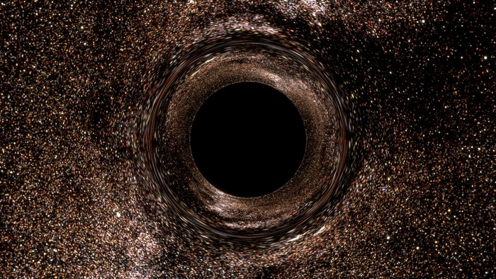
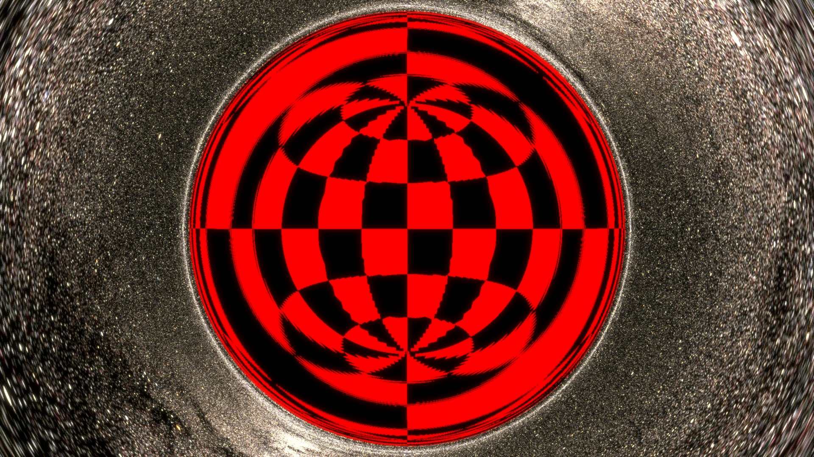
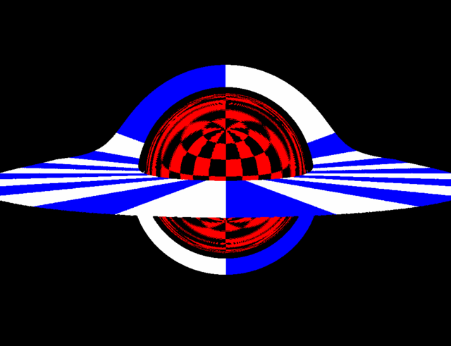
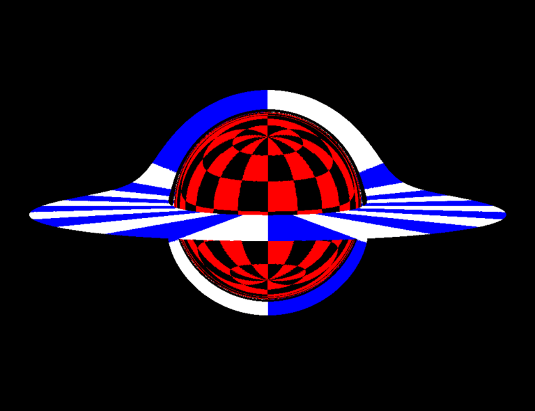
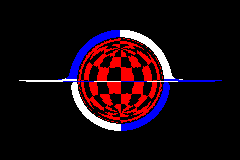
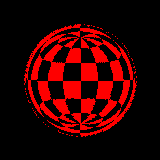
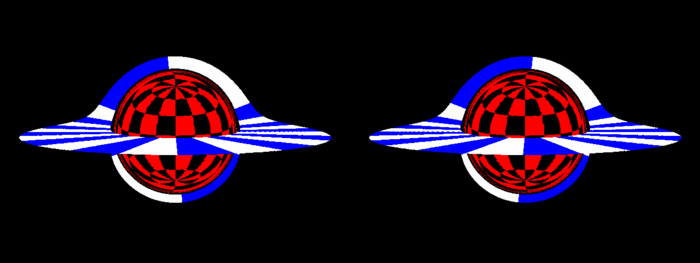
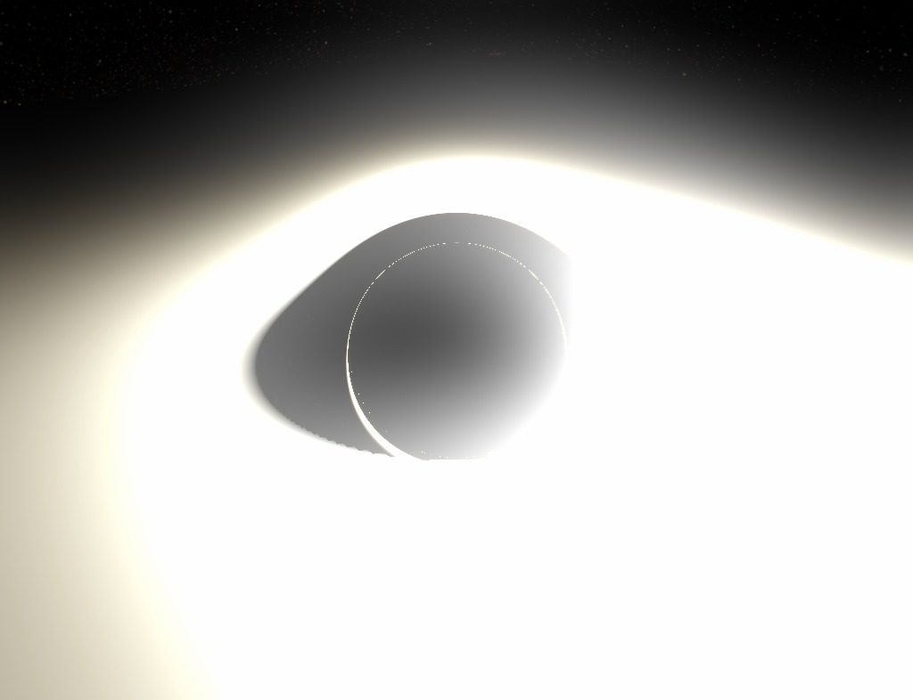
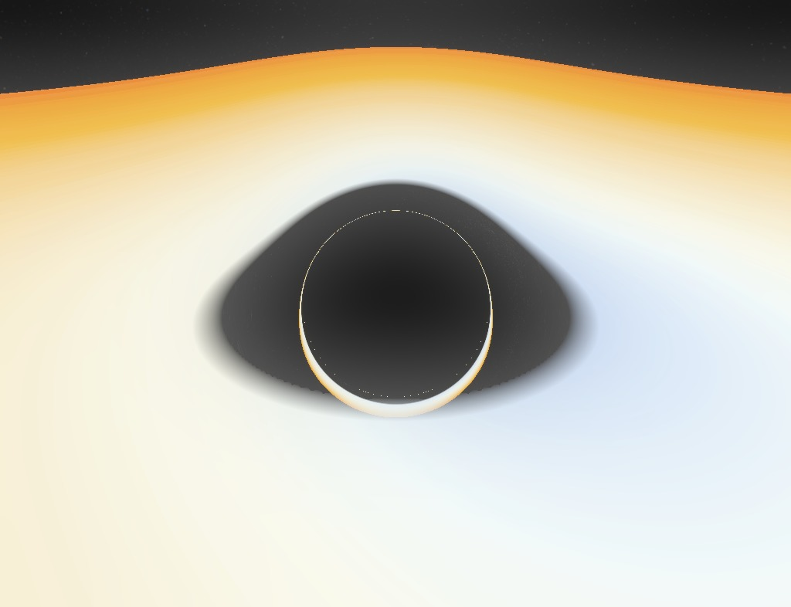
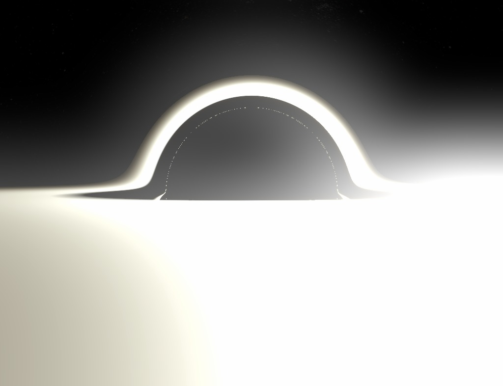

How to draw a Black Hole
Geodesic raytracing in curved spacetime
It's now clear I'm on a Black Hole binge (I can stop when I want, by the way). They're endlessly fascinating. My recent interest was in particular focused on simulating visualizations of the Schwarzschild geometry. I was preoccupied by the problem of generating a decent accurate representation of how the curvature of such a spacetime affects the appearance of the sky (since photons from distance sources ride along geodesics bent by the Black Hole), for the purpose of creating an interactive simulation. This was the result (it runs in your browser). The trick was of course to precalculate as much as possible about the deflection of light rays. It worked ok-ish, but the simulation is of course very lacking in features, since it's not actually doing any raytracing (for the laymen: reconstructing the whereabouts of light rays incoming in the camera back in time) on its own.
This project, instead, aims to shatter these shortcoming by ditching efficiency/interactivity in the most naive way: it's a full CPU raytracer, taking all the time it needs to render pictures. The image above was rendered with this program - it took 15 5 minutes (thanks, RK4) on my laptop.
This is neither anything new nor is it any better than how it's been done before. It's just really fun for me. I'm writing this page to share not only end-results such as the image above (also because some people did it better) but also the process of building these pictures, with a discussion/explanation of the physics involved and the implementation. Ideally, this could be of inspiration or guidance to people with a similar intent.
For most recent renders check this tumblr tag
A bit of pseudo-Riemannian optics
The shadow
If you have already tried my live applet, you should be familiar with this view:
{kind=link}
You shouldn't have problems making out the salient feature of the image, namely the black disk and the weird distortion ring.
It's often pointed out that it's incorrect to say that the black disk is the event horizon. In fact, it's incorrect to say that a region of an image is an object. These are images of things. Now, it's true that there will be rays that, when backtraced from your eye, will end up in the event horizon. These will be black pixels, since no photon could ever have followed that path goin forward, from inside the black hole to your eye. This black disk is thus very clearly the image of the event horizon, in the sense that if you draw (in the far past) something right above the horizon, outside observers will be able to see it right on that black disk (we will actually perform this experiment later). This black region is also called "shadow" of the BH in some pulbications.

What it's interesting to note, however, is that this is at the same time the image of the photon sphere. The gnuplot graph above depicts geodesics of incoming photons from infinity (looking at the BH from far away zooming in) along with the EH (black) and the PS (green). The photon sphere is \( \frac{3}{2} \) times the event horizon (in Schwarzschild \(r\)) and is the location where circular orbits of light around the BH are allowed (though unstable). In the graph, identify rays that fall to their death and those who get only scattered (and thus end up on another point on the celestial sphere). You see that absorbed rays are those arriving with an impact parameter of less than ~ 2.5 radii. This is the apparent radius of the black disk, and it's significantly larger than both the EH and the PS.
Anyways, the relevant trivia here is this:
A light ray infalling in the photon sphere in free fall will also reach the event horizon.
This implies that the image of the photon sphere is included in that of the horizon. However, since the horizon is very clearly inside the photon sphere, the image of the former must also be a subset of that of the latter. Then the two images should coincide.
Why should you care that the black disk is also the image of the PS? Because it means that the edge of the black disk is populated by photons that skim the photon sphere. A pixel right outside the black disk corresponds to a photon that (when tracing backwards) spirals into the photon sphere, getting closer and closer to the unstable circular orbit, winding many times (the closer you look, the more it winds), then spiraling out - since the orbit is unstable - and escaping to infinity.
This behaviour will produce an interesting optical phenomenon and is basically getting close to a separatrix in a dynamical system. In the limit, a ray thrown exactly on the edge will spiral in forever, getting closer and closer to the photon sphere circular orbit.
The effect on the celestial sphere
I'm not gonna focus a lot on this, because this was the main goal of the live applet, and you can get a much better idea of the distortions induced on the sky through that (which also includes an UV grid option so the distortion is clearer).
Just a couple of things about the Einstein ring. The Einstein ring is distinguishable as an optical feature because it is the image of a single point, namely that on the sky directly opposite the observer. The ring forms at the view angle where rays from the observer are bent parallel. Outside of it, rays are not bent enough and remain divergent; inside, they are bent too much and converge and in fact can go backwards, or even wind around multiple times, as we've seen.
But then, think about this: if we get close enough to the black disk, light rays should be able to wind around once and then walk away parallel. There we should see a secondary Einstein ring. In fact, rings of any order (any number of windings.) Also, there should be "odd" rings inbetween where light rays are bent parallel, but directed towards the viewer. This infinite series of rings is there, but it's absolutely invisible in this image (in fact, in most of them) as they are very close to the disk edge.
The distortion of the Event Horizon
{kind=link}
In this new image, there are a couple of things that have changed. First of all, this was rendered at a higher resolution and with filtering for the background, so as to be more readable. Then, I've zoomed in on the hole (haven't gotten closer, we're still at ~ 10 radii, just zoomed in). But most importantly, I have drawn a grid on the horizon.
The horizon is "just a sphere". Technically, it does not work like a standard Riemannian sphere with a spacial metric. The horizon is lightlike! A pictorial way of saying this is that it's going outwards at the speed of light. However, in Schwarzschild coordinates, it's still a \(r=1\) surface, and we can use \(\phi\) and \(\theta\) as longitude and latitude. So it's possible to draw a coordinate grid in a canonical way. Then what you're seeing is how that grid would look.
The grid allows us to take note of a peculiar fact we could have also deduced by analizing the photon scattering/absorption graph above:
The whole surface of the horizon is visible at the same time, from any point
This is very interesting. When you look at a stationary sphere in standard flat spacetime, you can see at most 50% of its surface at any given time (less if you're closer, because of perspective). The horizon, instead, is all visible simultaneously, mapped in the black disk: notice in particular the North and South poles. However, while the surface of the EH is all there, it doesn't cover all of the black disk: if you zoomed in on the edge, you'd see that this image of the EH ends before the shadow ends. Namely you'll find a ring, very close to the outside edge, but not equal, which is an image of the point opposite the observer and delimits this "first" image of the EH inside. So what's inbetween this ring and the actual edge? I haven't yet bothered making a zoom to show this, but there's another whole image of the event horizon squeezed in there. And then another, and then another, ad infinitum. There are infinite concentric images of the whole horizon, squeezed on the shadow. (Many thanks to /u/xXxDeAThANgEL99xXx for pointing out this phenomenon, which I had overlooked.
Adding an accretion disk
What modern black hole rendering would it be without an accretion disk? While it's certainly debatable whether Nolan's Interstellar was actually watchable, not to mention accurate, we can certainly thank the blockbuster for popularizing the particular way the image of an accretion disk is distorted. Here we have an infinitely thin, flat, horizontal accretion disk extending from the photon sphere (this is very unrealistic, orbits below \(3 r_S \) are unstable. More below) to 4 radii, coloured checkered white and blue on the top and white and green on the bottom. It is evident, with this colouring, that we've encountered another case of seeing 100% of something at the same time.
For this image, I moved the observer up a bit, so he can take a better look at the disk. You can see two main images of the disk, one of the upper face, and one, inside, of the lower. The blue image has the far section of the upper disk distorted to arch above the shadow of the BH. This happens because a ray pointing right above the black hole is bent down to meet the upper surface of the disk behind the hole, opposite the observer.
This also explains the very existence of the green image: rays going below are bent to meet the lower surface, still behind the hole. The green image, if you look closely, extends all around the shadow, but it's much thinner in the upper section. This corresponds to light rays that go above the BH, are bent into an almost full circle around the hole and hit the lower surface in the front section of the disk.
Of course, it's easy to deduce that there is an infinite series of accretion disk images, getting very quickly thinner and closer to the edge. The next-order image, in blue, is already very thin but faintly visible in the lower portion of the edge.
GIFs are still cool in 2015
In this spastic animation I turn the deflection of light on/off (formally, Schwarzschild/Minkowski) to make clear some of the points we went over before.
The lower surface is blue and not green because I'm lazy, use your imagination or something.
 These trippy .gifs, instead, were requested by some people. The observer is circling the black hole at 10 radii. This is not to be understood as an actual orbit, as there are no effect such as aberration from orbital velocity. This is to be understood as the observer taking a series of snapshots of the black hole while stationary, and moving from place to place inbetween frames; it's an "adiabatic" orbit, if you want.
Also stereo pics are still cool
Interesting how the shadow looks pretty much flat.
Enough science.
Enough with the informative pixelated 90's uni mainframe renderings with garish colors. Here's some "pop" renders (click for full size)
{kind=link}
{kind=link}
{kind=link}
{kind=link}
{kind=link}
{kind=link}
Yeah, they're nothing special. Not an artist here. Let's get back temporarily to the science: the third image, the one that doesn't seem to make any sense, is actually very precious. It's a zoom on the region between the upper edge of the black disk and the main ("first blue") image of the accretion disk. The observer is placed on the outer rim of the accretion disk itself and zooms in on this detail. The goal was to image as many orders of rings as possible. Three orders are visible: the lighter zone at the top is just the lower rim of the first image of the top-far surface of the disk. The strip at the bottom, below a calm sea of outstretched stars, is the superior part of the second image, the "first green" one, of the bottom-front of the disk. At the very bottom is a thin line of light not more than a pixel wide, glued to the black disk of the photon sphere. This is mainly the third image, the "second blue": it's the image again of the top-far surface, but after the light has completed an additional winding around the black hole. Merged with it, but increasingly thin, are all subsequent higher-order images. Ok, this is something worthy of <blockquote> tags:
There are infinite images of both the upper and lower surface of the accretion disk, and they all show the whole surface simultaneously. Moreover, except for the very first, these images don't pass in front of the black disk nor eachother, and are thus "concentric".
Marvelous.
I'm taking render requests
Are you interest in a specific render, but aren't willing to go through the trouble of installing the program and rendering it yourself? Just hit me up on Reddit or send me an e-mail. It takes no more than 10-20 minutes for 1080p on my laptop.
Realistic accretion disc
The accretion disc in the renders above is cartoony. It's just a disc with a stupid texture splattered on it. What happens when in the visual appearance of the disc we include physics-aware information? What happens when we include redshift from orbital motion, for example?
A popular model for an accretion disc is an infinitely thin disc of matter in almost circular orbit, starting at the ISCO (Innermost Stable Circular Orbit, \(3 r_s\)), with a power law temperature profile \(T \sim r^{-a} \). I'll use the extremely simple \[ T \sim r^{-3/4} \] which is most definitely not ok in GR for realistic fluids, but it'll do (you'll see it's not like you can tell the difference anyway).
A free parameter now is the overall scale for the temperatures, for example the temperature at the ISCO. This temperature is immense for most black holes. We're talking hundreds of millions of Kelvin; it's difficult to imagine any human artefact that could survive being exposed to the light (peaking in X-rays) of a disc at those temperatures, let alone capture anything meaningful on a CCD. We then really have to tone it down. Apparently supermassive black holes are colder, but not enough. We need to pull it down to around 10 000 K at the ISCO for us to be able to see anything. This is highly unaccurate, but it's all I can do.
We need to ask ourselves two questions. One: what colour is a blackbody at that temperature. Two: how bright is it? Formally, the answer to those two questions is in the scalar product of the functions describing R,G,B channels with the black body spectrum. In practice, one uses some approximations.
For colour, this formula by Tanner Helland is accurate and efficient, but it involves numerous conditionals which are not feasible with my raytracing setup (see below for details). The fastest way is to use a lookup texture:

This texture is one of many goodies from Mitchell Charity's "What color is a blackbody?". (For reference, it corresponds to whitepoint E).
This runs from 1000 K to 30 000 K, higher temperatures are basically the same shade of blue. Since there is an immense difference in brightness between temperatures, this texture cannot and does not encode brightness; rather, the colours are normalized. It is our duty to compute relative brightness and multiply. We can use an analytic formula for that. If we assume that the visible spectrumis very narrow, then the total visible intensity is proportional to the blackbody spectrum itself: \[ \frac{1}{\lambda^5} \frac{1}{ \exp( \frac{hc}{\lambda k_B T}) - 1 } \] where I got rid of stupid overall constants (we're going to rescale brightness anyway to see anything). We can just plug in \(\lambda\) roughly in the visible spectrum range and we get that brightness is proportional to: \[ ( e^ { \frac{29622.4 \text{K}}{T} } - 1 )^{-1} \] That's easy enough. As a check, we note that relative intensity quickly drops to zero when T goes to zero, and is only linear in T as T goes to infinity.
Redshift
I discusses the orbital speeds in the Schwarzschild geometry in the explanation for the live applet. To compute redshift, we use the special-relativistic redshift formula: \[(1+z)_\text{Doppler} = \frac{ 1 - \beta \cos(\theta) } {\sqrt{1-\beta^2} } \] Where as \(\cos(\theta) \) is the cosine of the angle between the ray direction when it's emitted by the disc and the disc local velocity, all computed in the local inertial frame associated with the Schwarzschild coordinates. This formula is correct in this context because muh equivalence principle.
This is to be multiplied with the gravitational redshift factor: \[(1+z)_\text{Gravitational} = (1 - r^{-1})^{-1/2} \] this factor does not depend on the path of the light ray, only on the emission radius, because the Schwarzschild geometry is stationary.
This also means that the contribution to gravitational redshift due to the position of the observer is constant over the whole field of view. All our image gets a constant overall blueshift because we're deep in the hole's well. This effect therefore is just applying a tint over our image, and we ignore it.
We also neglect redshift from observer motion, because our observer is Schwarzschild-stationary. The final result is this:

As you can see, most of the disc is completely white, because it saturates the colour channels. If I scale down those channels to fit in the 0.0-1.0 range, the outer parts of the disk become faint or black. The growth in brightness is too large for us to appreciate. I've tried to depict it in postprocessing through a bloom effect to make really bright parts bleed instead of just clip, but it's hardly sufficient.
Quite a confusing picture. Here's a picture with the intensity ignored, so you can appreciate the colours:
These are at a smaller resolution because they take so long to render on my laptop (square roots are bad, kids).
Anyways, it looks thousands of time less scenographic than the other renders (mostly because the inner edge of the disk is already far away enough from the EH that lensing looks quite underwhelming), but at least it's accurate, if you managed to find a 10 000 K black hole and some really good sunglasses, that is.
Another shot from a closer distance. I tweaked saturation unnaturally up so you can tell better:
Writing a black hole raytracer
Source on Github
There is very obviously a massive difference between understanding the qualitative aspects of black hole optics and building a numerical integrator that spits out 1080p ok-ish wallpaper material. Last time I neglected the aspect of explaining my thought processes in coding and I put up a really messy git repo. I want to go a little more in detail now and will try to mantain the code tidier and commented.
I don't want this raytracer to be good, solid, fast. I want it to be easy and hackable, so that people can be inspired by it, may it be because they see potential for improvement or because it's so sh***y it makes them want to make their own. So here's a quick walkthrough of the algorithms and implementation.
The "magic" potential
So, General Relativity, right. Easy. Take the Schwarzschild metric, find the Christoffel symbols, find their derivative, write down the geodesic equation, change to some cartesian coordinates to avoid endless suffering, get an immense multiline ODE, integrate. That's pretty much it.
Just kidding. Of course there's a trick.
If you remember last time, I derived the following equation for the orbit of a massless particle in its orbital plane in a Schwarzschild geometry (\(u=1/r\)): \[ u''(\phi) + u = \frac{3}{2} u^3 \] The trick is to recognize that this is in the form of a Binet equation. If you have an absolutely massive and Newtonian particle in a Newtonian central potential: \[ \frac{d^2}{dt^2} \vec x = \frac{1}{m} F(r) \] then the particle will obviously move in its orbital plane, and will satisfy the Binet equation for \(u(\phi)\): \[ u'' + u = - \frac{1}{m h^2 u^2} F(u) \] Where the prime is \(\frac{d}{d\phi}\), \(m\) is the mass and \(h \) is the angular momentum per unit mass. This is an equation for the orbit, not an equation of motion. It does not tell you anything about \(u(t)\) or \(\phi(t)\), just the relationship between \(u\) and \(\phi\).
Let's pause a moment to ponder what this is actually telling us. It says that if we were to evolve an hypothetical mechanical system of a particle under a certain central force, its trajectory will be a solution to the Binet equation. Then the mechanical system becomes a computational tool to solve the latter.
What I propose here it's exactly this. We put \(m=1\) and take the (unphysical, whatever) simple system of a point particle in this specific force field: \[ \vec F(r) = - \frac{3}{2} h^2 \frac{\hat r}{r^5} \] where \(h\) is some constant, and integrate that numerically - it's very easy. Then the solution \(\vec x (T) \), where \(T\) is the abstract time coordinate for this system, is actually a parametrization of the unique solution for the corresponding Binet equation, which is exactly the geodesic equation.
So we solve Newton's equation in cartesian coordinates, which is the easiest thing ever; I use the leapfrog method instead of RK4 because it's simple, reversible and preserves the constants of motion. (I now switched to Runge-Kutta to be able to increase step size and reduce render times, but with the future possibility of leaving the choice of integration method to the user). Then what I obtain is just the actual lightlike geodesic; with \(T\) a parameter running along it (distinct from both Schwarzschild \(t\) and proper time, that doesn't exist).
This is much better than the previous method, that worked with polar coordinates in the orbital plane. This is very efficient computationally.
Raytracing in numpy
If you take a look at the source tree you'll find is not much of a tree. It's just a python script. The horror! Why would anyone write a raytracer in python? Python loops are notoriously heavy, which is mostly (but not completely) a dealbreaker. The point here is that we're doing the computations in numpy, and calculating everything in parallel. This is why this program won't show you progressively the parts of the image it has already rendered: it's raytracing them all at the same time.
One basically starts by creating an array of initial conditions. For example, a (numPixel,3) array with view 3-vector corresponding to every pixel of the image (numPixel is image width * image height). Then every computation one would do for a single ray, one does in (numPixel, ...)-shaped arrays. Every quantity is actually an array. Since operations on numpy arrays are very fast and everything is statically typed (hope I'm not saying anything stupid right now) this should be fast enough. Maybe not C, but fast-ish.
At the same time, we have the versatility and clarity of python.
This method is basically horrible for standard raytracing, where objects have diffuse, reflective, refractive components and illumination conditions are important. Selectively reflecting parts of an array of rays, for example, is a nightmare; taking track of booleans or loop indices requires numerous masks and loops cannot be broken out of. However, this is not our case: the only objects in our scene are exclusively emissive: the sky, the incandescent accretion disk, the pitch black event horizon, and the bright dust. These are unaffected by incoming light on the object, and light itself passes through them undisturbed, at most reduced in intensity. This leads us to our colour determination algorithm:
Colour blending
It's easy: we just need to blend together all objects between us and the origin of the ray with their respective alpha values, stacking them with the farthest at the bottom. We initialize a colour buffer with alpha to transparent black, then on intersection with an object, we update the buffer by blending the colour from the object below our colour buffer. Also every step we do this for the dust (we use a \(r^{-2}\) density profile). We go on like this until iterations end. Note that the alpha channel then also functions as a z-buffer, as object stop contributing after the ray has intersected an opaque object (that thus set the buffer's alpha to 1.0).
This technique has the obvious drawback that you just cannot stop tracing a ray after you're done with it, as it's part of an array where other rays are still being traced. After colliding with the horizon, for example, rays continue wandering erratically from precision error after they hit the singularity - you can see what happens by explicitly disabling the horizon object. The alpha blending algorithm ensures they won't contribute anymore to the final image - but they will still weigh on the CPU.